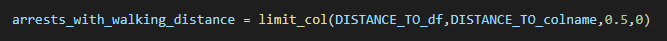

Introduction: "Purpose"
My project uses NYC open data's arrest data to attempt to find correlations between arrests and proximity to a given station. I would like to preface my explanation with a few assumptions and limitations As part of my study I calculate the distance between each arrest and each given station. I then sort out arrests that occurred with in 0.5 kilometers of the station. I have picked 0.5kms as the maximum distance to consider when analyzing a station as it is a common standard for acceptable walking distance (Source). However, this distance can be modified as needed by altering the following portion of code: 
The goal of my study was to determine if arrests clustered around train stations. This was ulimately done through using KMeans clustering to determine the actual center that arrests within 0.5 kms of a station clustered around. To make useful statments about the data, one might expand the region.